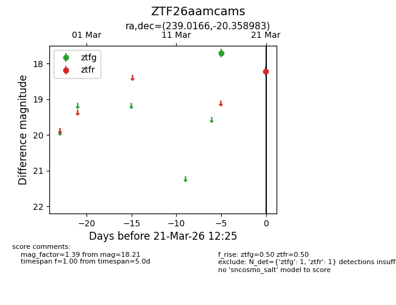
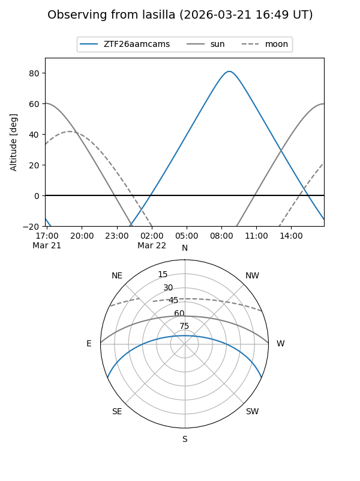
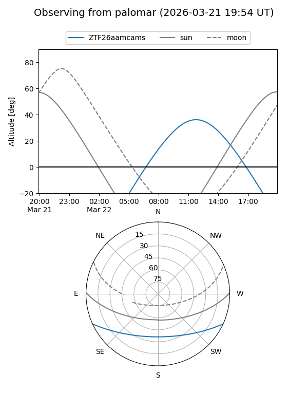

ZTF26aamcams
Target ZTF26aamcams at 2026-03-21 12:29
Aliases and brokers:
FINK: link
Lasair: link
ALeRCE: link
alt names
ZTF26aamcams (ztf,fink_ztf)
Coordinates:
equatorial (ra, dec) = 239.0166,-20.35898
equatorial (HMS+DMS) = 15:56:03.97,-20:21:32.34
galactic (l, b) = (351.0769,+24.79244)
Flags:
Photometry:
last ztfg=17.70, ztfr=18.21
1 ztfg, 1 ztfr detections
Lightcurve

Visibility


Additional plots